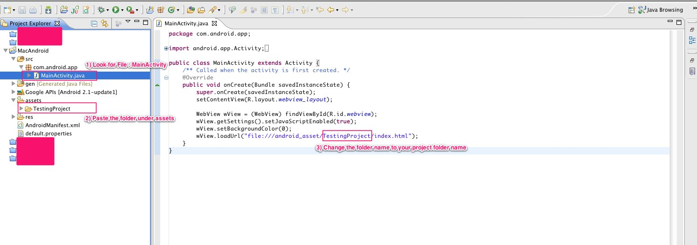

README
This Andriod project is meant to quickly transform a MobDis Export into a Andriod App.
This project is hosted here at:
Requirements
1. Andriod SDK and Eclipse set up on localhost. ( http://developer.android.com/sdk/installing.html )Steps
1) Export Campaign from your MobDis project. The folder will be the same name as the campaign name and usually contains files named iadjs.js, index.html, publish_loading.gif, publishCSjs.js and publishstyle.css.
2) Drag the folder into the Andriod project under Assets
3) Under src > com.android.app > MainActivity, change " file:///android_asset/testing/index.html " to " file:///campaign_name/testing/index.html "
4) Run the application to test.
The final setting should looks like the following :

Process of Submitting a Android Application
1. We have a sample Andriod project for you to turn your MobDis Campaign into a Andriod Application. The process takes about 30 minutes.
2. After you have successfully tested the application on the device, you can submit the application to the Andriod App Store using their submission process. ( http://developer.android.com/guide/publishing/publishing.html )
For more information and guide, please see here. http://developer.android.com/guide/publishing/publishing.html